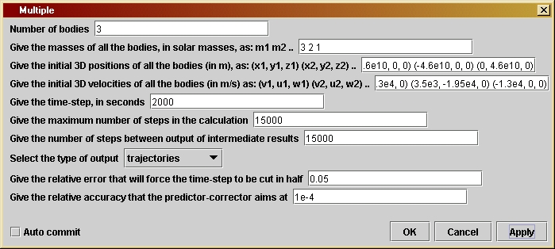
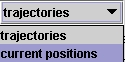

Multipleversion 1.0
© 2003 Bernard Schutz
|
As discussed in Chapter 13, Multiple is an extremely powerful tool that allows the user to investigate a huge variety of self-gravitating systems, limited only by the speed and memory capacity of the computer on which it runs. This includes full three-body systems, where the user can see how a three-body encounter can form or harden a binary and expel the third body; several-body systems where the user can watch systems share energy among the components and move toward equilibrium; and galaxy collisions, where the user can see how galaxies merge and redistribute their material.
In order to allow simulations to run for longer periods of time, this program incorporates a new feature, which allows the user to choose the number of time-steps between output events. This can be considerably less than the total number of steps, so that intermediate results can be output, and the grapher window will look like a movie of the simulation. This device reduces memory consumption, since the program only has to store data for the number of steps between output events, not for the whole simulation. The user can also choose whether to see the entire trajectory of all the particles since the last output step, or just their current positions at the time of output.
The simulation takes place in three dimensions, and the output data contain all three position coordinates of the bodies. The grapher, of course, shows only a two-dimensional view of the data. If you connect Multiple directly to SGTGrapher as above, then SGTGrapher will by default display the x- and y-coordinates of all the points, which amounts to projecting all the trajectories onto the x-y plane. If you want to view the data with a different projection, use the unit called ViewPoint. Drag this into the working area and give it as many input and output nodes as there are particles. Connect the output from Multiple to the input to ViewPoint, and connect the output from ViewPoint to the input of SGTGrapher. Then use the parameter window of ViewPoint to define the viewing location, by giving the spherical coordinates (in degrees) of the viewer's location relative to the simulation's coordinate axes. The data will be projected onto a plane perpendicular to the line of sight of this observer. Every time you change the viewing position, ViewPoint will output a new view of the existing data. You don't need to re-run the simulation if all you want to do is to view it from a different angle.
To set parameters, open the parameter window, shown here. The default parameter values describe a simulation in which three bodies approach one another, and their interaction produces a binary pair and a runaway third body. The parameter format in this program is somewhat different from previous ones, because we do not know ahead of time how many bodies there are. Therefore we cannot have a separate parameter for each body. Instead, the mass, initial position, and initial velocity parameters must contain the information for all bodies at once.
The first parameter is the number of bodies. The second is their
masses,
in solar masses. These should be entered as a list of numbers with
spaces
between. It should of course have as many numbers in it as the number
of
bodies given in the first parameter line. The third parameter is the
list
of initial positions of all the bodies, in three dimensions. Each
body's
initial position is given in the form (x,y,z),
containing the three position coordinates, separated by commas,
contained
in parentheses. Spaces inside are optional. This parameter must give
all
the bodies in the same list, so it should contain the positions of all
the bodies, separated by spaces (not commas) between the positions of
the
bodies. The default list reads
(4.6e10,
0, 0) (-4.6e10, 0, 0) (0, 4.6e10, 0).
The fourth parameter is a list of the initial velocities of all bodies,
again in three dimensions. It has the same format as the position list.
Make sure that both lists have the same number of entries as the number
of bodies given in the first line.
The fifth parameter is the time-step in seconds, which has the same meaning as in previous programs. The sixth parameter is the number of steps in the program. The program will halt only when it reaches this number of steps. The seventh parameter is something new: it is the number of steps between output events. This allows the user to decide whether to output all the data at once (as in previous programs) or in intermediate steps. The default value equals the total number of steps, so that there will only be one output event, at the very end. If you have a large number of bodies and you want to run for many time-steps, you may exceed your computer's storage capacity; if so you will get a warning message. To avoid this, choose the number of steps for output to be small enough that all the data for these steps will fit in memory. Then you can see how the simulation progresses by viewing the successive output sets.
The eighth parameter is a choice box, shown at the left. It allows the user to choose the style of output. The first option, "trajectories", will produce output like we have seen in previous programs: curves of the positions of the bodies. The second option, "current positions", produces output consisting of a single point for each body, representing the position of that body at the time-step at which output is performed. This enables you to get a video effect, particularly if the output steps parameter is chosen small enough. To see the positions of the body, you will need to modify the way SGTGrapher displays the data. From the Plot menu of the graph window, choose Plot Properties. For each of the input data sets (called Layers) there will be a LineAttribute entry. Double-clicking on it opens another window, in which you can choose the line-style. Choose Mark and, if you wish, select the mark to be used in the next line.
The final two parameters control the accuracy of the simulation in
the
same way as in previous programs.
In the default example, we chose the stars' initial velocities to lie exactly in the plane defined by the initial positions of the three stars. This is clearly a very special choice that is unlikely to be very realistic. It also makes interactions of the kind we have found much more likely and dramatic. To test how important this assumption is, give one or more of the stars a small component of velocity in the z-direction, out of the plane, and see what happens. Naturally, if you give them a largezx-velocity they will not come close enough to one another to interact. So choose the z-velocity carefully, so that when the stars come near to one another their z-separations are comparable to their separations in the x-y plane.
You can use this program to test MercPert. Set up the same initial data as is described in the help file, and give "Mercury" a small mass. You should of course see the same behavior. Now increase the mass of "Mercury" to make it comparable to that of "Jupiter". What happens? In either case, give "Mercury" a small vertical component of velocity to see what happens in the genuinely 3-dimensional problem. How does the subsequent behavior of "Mercury" change if it passes just above "Jupiter" rather than just in front or just behind?
There are many other systems that are of interest in astronomy. Stars often form in groups of from ten to ten million members. While it is not practical to use this program with ten million bodies, you might try to set up a star cluster with up to ten members if you have a sufficiently fast computer. Give them random velocities and positions, for example, within some boundaries, such as keeping all stars within 0.1 pc of the center, and keeping all speeds below 10 km/s. See if the cluster disappears ("boils away") or remains bound. Does it grow in size or shrink? Change the initial size and speed limits and do the experiment again. Do it initially for stars of the same mass, say all with the mass of the Sun. Then put in a couple of 10 solar-mass objects (black holes) to see what happens to them. Do they need to have much smaller initial velocities to keep them confined?
Finally, you can even explore galaxy collisions. Start again with
your
10 particles, but let two of them be very massive, say 1011
solar masses. Let them have an initial separation of 50 kpc and let
them
approach one another with a speed of 100 km/s. Surround each galaxy
with
four smaller bodies, which represent the stars attached to it. Let them
have initial positions and velocities relative to their galaxy that are
typical of our Galaxy, for example positions 10 kpc from the galaxy and
rotational velocities of 300 km/s. You will have to do some elaborate
arithmetic
to get the correct initial configuration, but once you have done that
it
will be easy to change it for other configurations. You may have to
tune
these numbers to get a collision that seems realistic. Note that if the
small bodies really have negligible masses, then the two galaxies will
conserve energy and will not come to rest. But if you give the smaller
bodies masses of, say, 1010 solar masses, then the galaxies
can exchange energy with them and this dissipation might result in a
"merger"
of the two galaxies. Of course, such large masses are unrealistic as
single
objects, but they represent the free stars in the whole galaxy.
To compute the accelerations, the program must add up the
acceleration
produced by each body in every other body. We only have to treat pairs
of bodies: having got the acceleration produced by body 1 on body 2, it
is easy to compute the acceleration produced by body 2 on body 1. This
requires a double loop, which begins with the code
for (
A = 0; A < nBodies; A++ ) for ( B = A+1; B < nBodies ; B++ ) {
This uses two variables A and B
to represent the two bodies in each pair. Since only pairs of distinct
bodies is needed, the second index B
starts
with the value A+1. To see how
the
acceleration calculation is done, read the comment lines that precede
this
code in the listing below. Notice that, since the second loop is
executed
for each value of the first, the steps within the double loop are
executed
nBodies*(nBodies-1)/2
times, which is the number of pairs of particles. For large numbers of
bodies, this increases as the square of the number of bodies. Thus, a
simulation
involving 10 bodies will take four times longer to execute than one
involving
5 bodies.
The other innovation is the option of producing output at regular
intervals
during the program. The program introduces a counter stepsSinceOutput
that
is set to zero after each output event and which is incremented by one
at the end of each time-step. When the value of this counter reaches
outSteps,
the parameter set by the user in the parameter window, then another
output
occurs. The kind of output is determined by the value of the String
variable
outputType set by the user in the choice box. The program uses a
separate
output function for convenience.
Professional computational physicists who perform simulations involving tens of millions of particles introduce many more sophisticated tricks. They cannot afford to live with the scaling mentioned above, where a simulation with 106 particles requires 1012 times more computer time than a simulation with just one particle. Instead, they build a hierarchy of zones containing more and more particles, and when computing the acceleration of a body produced by particles that are far away from it, they use all the particles in a zone as a single particle. This hierarchy is called a "tree", and "tree codes" have made it possible for computers to simulate globular clusters, galaxy collisions, and galaxy formation. These codes also deal with the time-step problem in a clever way, using different time-steps for different particles. That way, a close encounter of two particles does not force a too-precise computation of the trajectories of all the others. These powerful devices require years of development to perfect, so I do not recommend that any readers casually embark on these projects!
If you want to change the program you will have to re-compile it, as explained by the help file Using Triana for Gravity from the ground up.
/*
nBodies is the value given in the
parameter window for the
number of bodies whose gravitational
interaction is
being computed.
The variables massLength, posLength,
and velLength are set when
the parameters are read; they give
the number of items in each of
the parameter input Strings typed
by the user. They should all
equal nBodies or there is an
inconsistency.
*/
private int nBodies;
private int massLength, posLength, velLength;
/*
masses is a String defined by the
user in the parameter window,
which holds the masses of all the
bodies, in solar masses. It
consists of a sequence of numbers
separated by spaces.
m is an array that holds the values
of the masses, after they
are extracted from the String masses.
*/
private String masses;
private double[] m;
/*
initPos is a String defined by the
user in the parameter window,
which holds the initial positions
of all the bodies. It consists
of a sequence of pairs of the form
(x,y), one for each body. The
pairs can be separated by spaces
or any other symbol, or nothing
at all. Spaces within the pair are
also allowed. The user should
ensure that the number of pairs
equals nBodies.
xInit and yInit are arrays that
hold the initial x-positions and
y-positions of all the bodies, after
they are extracted from initPos.
*/
private String initPos;
private double[] xInit, yInit, zInit;
/*
initVel is a String defined by the
user in the parameter window,
which holds the initial velocities
of all the bodies. It consists
of a sequence of pairs of the form
(v,u), one for each body. The
pairs can be separated by spaces
or any other symbol, or nothing
at all. Spaces within the pair are
also allowed. The user should
ensure that the number of pairs
equals nBodies.
vInit and uInit are arrays that
hold the initial x-component of
the velocity and the initial
y-component,
for all bodies, after
they are extracted from initPos.
*/
private String initVel;
private double[] vInit, uInit, wInit;
/*
dt is the time-step in seconds.
It is set by the user in the
parameter window.
*/
private double dt;
/*
maxSteps is the maximum number of
steps in the calculation.
This is used to ensure that the
calculation will stop even
if initial values are chosen so
that "Mercury" is expelled
from the Solar System. It is set
by the user in the parameter
window.
*/
private int maxSteps;
/*
outSteps fixes the number of
time-steps
between output events.
This allows the program to run for
a long time without using up
memory storing all steps at once.
outputType allows the user to choose
to output a view of the
trajectories of the bodies since
the previous output, or just
output the current positions of
the bodies. If outSteps is
chosen to be small, then choosing
to view the current positions
will produce a kind of video of
the simulation.
*/
private int outSteps;
private String outputType;
/*
eps1 sets the accuracy of the
time-step.
If computed quantities
change by a larger fraction than
this in a time-step, the time-step
will be cut in half, repeatedly
if necessary. It is set by the user
in the parameter window.
*/
private double eps1;
/*
eps2 sets the accuracy of the
predictor-corrector
step. Averaging
over the most recent time-step is
iterated until it changes by
less than this relative amount.
It is set by the user in the
parameter window.
*/
private double eps2;
/*
kGravity is Newton's gravitational
constant times the mass of the Sun.
It is used internally and not set
by the user.
*/
private double kGravity = 1.327e20;
/*
The next
statements define variables that are used in the double "for"
loop that
starts on the third line, and whose purpose is to compute
the initial
accelerations of the bodies. This double loop is repeated
in the
program
below wherever the accelerations have to be computed.
Therefore
we describe it in detail here.
Here are
the variables that we need. They are defined here and will be
re-used
with the same meanings wherever we need to compute the accelerations.
- xAB, yAB,
zAB are the x-, y-, and z-components (respectively) of the displacement
vector from body B to body A.
- rAB is
the distance between body A and body B.
- rAB3 is
the cube of the distance between body A and body B.
- kxAB,
kyAB, and kzAB are variables that hold temporary values used in the
calculation of the accelerations.
Here is
how the double loop works. The acceleration of each body depends on
all the
others but not on itself. The acceleration of body A is just the
sum of the
accelerations produced on it by all the other bodies. The
acceleration
produced on body A by body B is (as in previous programs
like
MercPert)
the product of the gravitational constant G times the
mass of
B (not of A) times the displacement vector from A to B, divided
by the cube
of the total distance between A and B. Since we store the
mass of
the bodies in solar masses in the array m[], we have put the mass
of the Sun
into the constant kGravity = G * Msun. Thus, the x-acceleration
produced
on A by B is -kGravity*m[B]*xAB/rAB3. (The minus sign is needed
because
we have defined xAB to be the x-component of the displacement vector
from B to
A.)
Not only
does B accelerate A, but also A accelerates B. In fact, the
x-acceleration
produced on body B by body A is +kGravity*m[A]*xAB/rAB3. Here the
sign is
different because the acceleration points in the opposite direction.
It follows
that to compute all these accelerations efficiently, we should
first
compute
the quantities kGravity*xAB/rAB3 (and similarly for y and z)
for each
PAIR of bodies (A,B), and then multiply them by the appropriate masses
to get the
contributions to the various accelerations. These contributions simply
add up for
each body to get the result.
The double
loop is designed to do the computations for each pair of bodies.
The first
index is A and it runs over all the bodies. But for each value of A,
there is
another loop with the index B that runs from A+1 to the maximum. This
ensures
that each pair (A,B) occurs only once in these loops, and that is where
the first
index is the smaller of the two. Thus, for three bodies with indices
0, 1, and
2, the loops compute only for the values (0,1), (0,2), (1,2).
For each
pair the loop computes:
- the
components
xAB, yAB, and zAB;
- the
distance
rAB and its cube rAB3;
- the
quantity
kxAB = kGravity*xAB/rAB3 that we noted above was common to the
accelerations of both A and B, and similarly kyAB and kzAB; and
- the x-,
y-, and x-contributions to the acceleration of A by B and the
corresponding contributions to the acceleration of B by A. Note that
these
are just added to the array variables holding the total accelerations:
ax,
ay, and az. When these variables were defined in the three lines just
before
this comment, Java automatically initialized their values to zero. So
they
go into the double loop with zero values, and come out with the sums of
all
the contributions.
*/
double xAB, yAB, zAB,
rAB, rAB3, kxAB, kyAB, kzAB;
for ( A = 0; A <
nBodies; A++ ) for ( B = A+1; B < nBodies ; B++ ) {
xAB = x[A] - x[B];
yAB = y[A] - y[B];
zAB = z[A] - z[B];
rAB = Math.sqrt(xAB*xAB + yAB* yAB + zAB*zAB);
rAB3 = rAB*rAB*rAB;
kxAB = -kGravity*xAB/rAB3;
kyAB = -kGravity*yAB/rAB3;
kzAB = -kGravity*zAB/rAB3;
ax[A] += kxAB * m[B];
ax[B] += -kxAB * m[A];
ay[A] += kyAB * m[B];
ay[B]
+= -kyAB * m[A];
az[A] += kzAB * m[B];
az[B] += -kzAB * m[A];
}
/*
- xCoordinate,
yCoordinate,
and zCoordinate are two-dimensional arrays that are
used to
store the values of x, y, and z of the different bodies at each
timestep.
Their first
index is the body, their second the timestep. Thus, xCoordinate[5][2]
will hold
the value of the x-coordinate of body 5 at timestep 2.
The size
of the arrays depends on the output type chosen by the user. If the user
selects
to have trajectories output, then the second index takes as many values
as will
be output at one time, which is the value of the parameter outSteps. If
the user
selects to output current positions, then the second index has only a
single value
of 0, and the arrays will be filled only at the last step before
output.
Store the
initial values of the position components in the appropriate elements
of these
arrays. If current positions are being output, output the initial
positions.
*/
double[][] xCoordinate,
yCoordinate, zCoordinate;
//double[][] yCoordinate
= null;
//double[][] zCoordinate
= null;
if (
outputType.equals("trajectories")
) {
xCoordinate = new double[ nBodies ][ outSteps ];
yCoordinate = new double[ nBodies ][ outSteps ];
zCoordinate = new double[ nBodies ][ outSteps ];
}
else {
xCoordinate = new double[ nBodies ][ 1 ];
yCoordinate = new double[ nBodies ][ 1 ];
zCoordinate = new double[ nBodies ][ 1 ];
}
for ( A = 0; A <
nBodies; A++ ) {
xCoordinate[A][0] = xInit[A];
yCoordinate[A][0] = yInit[A];
zCoordinate[A][0] = zInit[A];
}
if ( outputType.equals(
"current positions" ) ) doOutput( xCoordinate, yCoordinate, zCoordinate
);
/*
Now define
other variables that will be needed, but without giving
initial
values. They will be assigned values during the calculation.
- x1, y1,
and z1 are temporary arrays holding values of x, y, and z
(respectively) for each body that are needed during the calculation.
- ax1, ay1,
and az1 are likewise temporary arrays of the acceleration.
- dv, du,
and dw are arrays holding changes in the velocity components
that occur during a timestep.
- dx, dy,
and dz are arrays that hold part of the changes in the position
variables x, y, and z (respectively) for each body, that occur during a
time-step.
- ddx0,
ddy0, ddz0, ddx1, ddy1, ddz1 are arrays that hold other parts of
the changes in x, y, and z of the bodies during a time-step. The reason
for having
both dx and ddx will be explained in comments on the calculation below.
-
testPrediction
is an array that will hold a value for each body that is used
by the predictor-corrector steps to assess how accurately the
calculation
is proceeding.
- j and
k are integers that will be used as loop counters.
*/
double[] x1 = new
double[nBodies];
double[] y1 = new
double[nBodies];
double[] z1 = new
double[nBodies];
double[] ax1 = new
double[nBodies];
double[] ay1 = new
double[nBodies];
double[] az1 = new
double[nBodies];
double[] dv = new
double[nBodies];
double[] du = new
double[nBodies];
double[] dw = new
double[nBodies];
double[] dx = new
double[nBodies];
double[] dy = new
double[nBodies];
double[] dz = new
double[nBodies];
double[] ddx0 = new
double[nBodies];
double[] ddy0 = new
double[nBodies];
double[] ddz0 = new
double[nBodies];
double[] ddx1 = new
double[nBodies];
double[] ddy1 = new
double[nBodies];
double[] ddz1 = new
double[nBodies];
double[] testPrediction
= new double[nBodies];
int j, k;
/*
Now start
the loop that computes the two orbits. The loop counter
is j, which
(as in Orbit) starts at 1 and increases by 1 each
step. The
test for exiting from the loop will be that the number
of steps
exceeds the maximum set by the user.
*/
for ( j = 1; j <
maxSteps ; j++ ) {
/*
For each body, labeled by the index A;
- Set dv[A], du[A], and dw[A] to the changes in x-, y-, and z-speeds
that would occur during time dt1 if the acceleration were constant at
(ax[A], ay[A], az[A]).
- Similarly set dx[A], dy[A], and dz[A] to the changes in position that
would
occur if the velocity components v[A], u[A], and w[A] were constant
during
the
time dt1.
- Set ddx0[A], ddy0[A], and ddz0[A] to the extra changes in x, y, and z
that occur
because body A's velocity changes during the time dt1. The velocity
change
that
is used is only (dv[A]/2, du[A]/2, dw[A]/2) because the most accurate
change
in position comes from computing the average velocity during dt1. We
separate
the two position changes, dx[A] and ddx0[A], because dx[A] will be
unchanged
when we do the predictor-corrector below (the change in position due to
the
original speed is always there), while ddx0[A] will be modified when
ax[A]
and
hence dv[A] is modified by the predictor-corrector. Similar remarks
apply,
of course, to the y- and z-directions.
- Set ddx1[A], ddy1[A], and ddyz1[A] to ddx0[A], ddy0[A], and ddz0[A]
initially. They will change when we enter the predictor-corrector code.
- Finally advance the positions of the bodies by our initial estimates
of the
position changes, for example dx[A] + ddx0[A], and store that in x1[A].
*/
for ( A = 0; A < nBodies; A++ ) {
dv[A] = ax[A] * dt1;
du[A] = ay[A] * dt1;
dw[A] = az[A] * dt1;
dx[A] = v[A] * dt1;
dy[A] = u[A] * dt1;
dz[A] = w[A] * dt1;
ddx0[A] = dv[A] / 2 * dt1;
ddy0[A] = du[A] / 2 * dt1;
ddz0[A] = dw[A] / 2 * dt1;
ddx1[A] = ddx0[A];
ddy1[A] = ddy0[A];
ddz1[A] = ddz0[A];
x1[A] = x[A] + dx[A] + ddx0[A];
y1[A] = y[A] + dy[A] + ddy0[A];
z1[A] = z[A] + dz[A] + ddz0[A];
ax1[A] = 0.0;
ay1[A] = 0.0;
az1[A] = 0.0;
}
/*
Now compute the new distances of the bodies from one another and the
resulting acceleration at the first-guess positions of the bodies at
the time t1. Store the acceleration components in the arrays ax1, ay1,
and az1. This is a repeat of the loop used to compute the initial
accelerations, above.
*/
for ( A = 0; A < nBodies; A++ ) for ( B = A+1; B < nBodies ; B++
) {
xAB = x1[A] - x1[B];
yAB = y1[A] - y1[B];
zAB = z1[A] - z1[B];
rAB = Math.sqrt(xAB*xAB + yAB* yAB + zAB*zAB);
rAB3 = rAB*rAB*rAB;
kxAB = -kGravity*xAB/rAB3;
kyAB = -kGravity*yAB/rAB3;
kzAB = -kGravity*zAB/rAB3;
ax1[A] += kxAB * m[B];
ax1[B] += -kxAB * m[A];
ay1[A] += kyAB * m[B];
ay1[B] += -kyAB * m[A];
az1[A] += kzAB * m[B];
az1[B] += -kzAB * m[A];
}
/*
Time-step check.
This is the code to check whether the time-step is too large. The idea
is to compare the changes in acceleration of each body during the
timestep
with the acceleration of the body itself. If the change for any body is
too
large a fraction of the original value, then the step is likely to be
too large, and the resulting position too inaccurate. The code below
cuts
the time-step dt1 in half and then goes back to the beginning of the
loop.
The boolean (true-false) variable tooLarge is used to keep track of the
result
of testing all the different bodies. If any one body fails the test,
then
tooLarge is set to "true" and the calculation is repeated. If the loop
over
the bodies exits with tooLarge still equal to "false" then we go on to
the
predictor-corrector. Notice that the loop over the bodies has a more
complicated
test for repeating: it repeats only if A is less than nBodies (ie there
is another
body to test) AND if tooLarge is equal to "false" (so that !tooLarge is
equal
to "true"). Once any body fails the test and tooLarge is set to "true",
there is
no point in testing the remaining bodies, so the loop exits. The single
statement
inside the loop sets the value of tooLarge equal to a boolean
expression:
the
statement inside the outer () is a comparison, so it evalues either to
"true" or
to "false", and this value is assigned to tooLarge.
*/
boolean tooLarge = false;
for ( A = 0; (A < nBodies) && !tooLarge; A++ ) {
tooLarge = ( Math.abs(ax1[A]-ax[A]) + Math.abs(ay1[A]-ay[A])+
Math.abs(az1[A]-az[A])
> eps1*(Math.abs(ax[A]) + Math.abs(ay[A])) + Math.abs(az[A]) );
}
if ( tooLarge ) {
dt1 /= 2;
j--;
}
else {
/*
Predictor-corrector step. This is explained in program Orbit.
*/
for ( A = 0; A < nBodies; A++ ) {
testPrediction[A] = Math.abs(ddx0[A]) + Math.abs(ddy0[A]) +
Math.abs(ddz0[A]);
}
for ( k = 0; k < 10; k++ ) {
for ( A = 0; A < nBodies; A++ ) {
/* compute dv[A], du[A], and dw[A] by averaging the acceleration over
dt1
*/
dv[A] = (ax[A] + ax1[A])/2*dt1;
du[A] = (ay[A] + ay1[A])/2*dt1;
dw[A] = (az[A] + az1[A])/2*dt1;
/* compute ddx1[A], ddy1[A], and ddz1[A] by averaging the velocity
change
*/
ddx1[A] = dv[A]/2*dt1;
ddy1[A] = du[A]/2*dt1;
ddz1[A] = dw[A]/2*dt1;
}
/*
Test the changes in ddx, ddy, and ddz since the last iteration for each
.
body A. If it is more than a fraction eps2 of the original, then
set the variable tooLarge to "true", as in the test for the time-step
above.
Then, after all bodies are examined, if tooLarge is "true", the values
of
ddx, ddy, and ddz for each body have to be re-computed by finding the
acceleration
components at the refined positions.
On the other hand, if tooLarge is still false after examining all the
bodies,
then the position change is small enough, and the "else:" clause is
executed, which exits from the for loop using the statement
"break". This finishes the iteration and goes on to wrap up
the calculation.
*/
tooLarge = false;
for ( A = 0; (A < nBodies) && !tooLarge; A++ ) {
tooLarge = ( Math.abs(ddx1[A]-ddx0[A]) + Math.abs(ddy1[A]-ddy0[A])+
Math.abs(ddz1[A]-ddz0[A])
> eps2*testPrediction[A] );
}
if ( tooLarge ) {
/*
Re-define ddx0[A], ddy0[A] and ddz0[A] to hold the values
from the last iteration. Then get the acceleration values again.
*/
for ( A = 0; A < nBodies; A++ ) {
ddx0[A] = ddx1[A];
ddy0[A] = ddy1[A];
ddz0[A] = ddz1[A];
x1[A] = x[A] + dx[A] + ddx0[A];
y1[A] = y[A] + dy[A] + ddy0[A];
z1[A] = z[A] + dz[A] + ddz0[A];
ax1[A] = 0.0;
ay1[A] = 0.0;
az1[A] = 0.0;
}
for ( A = 0; A < nBodies; A++ ) for ( B = A+1; B < nBodies ; B++
) {
xAB = x1[A] - x1[B];
yAB = y1[A] - y1[B];
zAB = z1[A] - z1[B];
rAB = Math.sqrt(xAB*xAB + yAB* yAB + zAB*zAB);
rAB3 = rAB*rAB*rAB;
kxAB = -kGravity*xAB/rAB3;
kyAB = -kGravity*yAB/rAB3;
kzAB = -kGravity*zAB/rAB3;
ax1[A] += kxAB * m[B];
ax1[B] += -kxAB * m[A];
ay1[A] += kyAB * m[B];
ay1[B] += -kyAB * m[A];
az1[A] += kzAB * m[B];
az1[B] += -kzAB * m[A];
}
/*
We now have the "best" acceleration values, using the most
recent estimates of the position at the end of the loop on k.
The next statement to be executed will be the first statement
of the "for" loop, finding better values of dv, du, dw, ddx1,
ddy1, and ddz1 for each body.
*/
}
else break;
}
/*
The iteration has finished, and we have sufficiently accurate
values of the position change in arrays ddx1, ddy1, and ddz1.
Use them to get final values of arrays x, y and z at the end of
the time-step dt1, ready for the next time-step. Compute all the
rest of the variables needed for the next time-step and for
data output.
*/
t += dt1;
for ( A = 0; A < nBodies; A++ ) {
x[A] += dx[A] + ddx1[A];
y[A] += dy[A] + ddy1[A];
z[A] += dz[A] + ddz1[A];
ax[A] = ax1[A];
ay[A] = ay1[A];
az[A] = az1[A];
v[A] += dv[A];
u[A] += du[A];
w[A] += dw[A];
}
/*
Now fill the output arrays if appropriate.
*/
if ( outputType.equals( "trajectories" ) ) for ( A = 0; A < nBodies;
A++ ) {
xCoordinate[A][stepsSinceOutput] = x[A];
yCoordinate[A][stepsSinceOutput] = y[A];
zCoordinate[A][stepsSinceOutput] = z[A];
}
else if ( stepsSinceOutput == outSteps - 1 ) for ( A = 0; A <
nBodies;
A++ ) {
xCoordinate[A][0] = x[A];
yCoordinate[A][0] = y[A];
zCoordinate[A][0] = z[A];
}
}
/*
If the number of steps since the last output equals outSteps, then we do
the output and reset the value of the counter stepsSinceOutput. If not,
then increment the counter and go on to the next time-step.
*/
if ( stepsSinceOutput == outSteps - 1 ) {
doOutput( xCoordinate, yCoordinate, zCoordinate );
stepsSinceOutput = 0;
}
else stepsSinceOutput++;
}
}